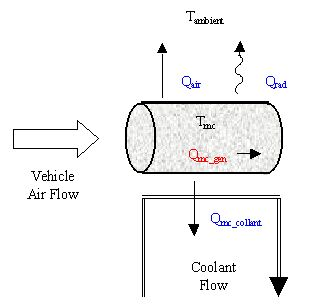
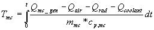

{kind=link}

Motor/controller block diagram
Role of subsystem in vehicle
The ‘motor/controller’ block translates torque and speed requests into electric power requests and converts actual power input to torque and speed output.
Description of modeling approach
The motor/controller model includes the effects of losses in the motor and controller, rotor inertia, and the motor’s torque speed-dependent torque capability. Power losses are handled as a 2-D lookup table indexed by rotor speed and output torque. The motor’s maximum torque is enforced using a lookup table indexed by rotor speed. Motor control blocks outside the ‘motor/controller’ ensure that the controller’s maximum current is not exceeded and that the motor shuts down when it is not needed. Available torque is computed from available power by assuming that the ratio of rotor torque to input (electric) power is the same for the actual/achievable situation as was computed for the request. This is mathematically equivalent to assuming the motor/controller efficiency. Rotor speed for the actual/achievable calculations is as computed in the ‘request’ branch.
Variables used in subsystem
See Appendix A.2: Input Variables
See Appendix A.3: Output Variables
Implementation: Thermal Model
A simple thermal model of the motor calculates the temperature of the motor and the thermal power rejected in to the coolant to maintain this temperature. The motor is modeled as a lumped capacity mass with liquid cooling based on a thermostat setpoint. Heat is generated by the motor, and removed through natural and forced convection, radiation to ambient air, and forced liquid cooling (see Figure 1).

Figure 1: Schematic of motor thermal model
Qmc_gen
The heat generated by the motor is found from the input power and output torque and speed. Qmc_gen=Pin-T*w.
Qair
Heat is removed from the motor through natural and forced convection with the ambient air. Qair=hair*A*(Tmc-Tambient) The heat transfer coefficient is computed using known heat transfer coefficients for given experimental conditions. For a DT of 1000oC, h from natural convection was 6 W/m2K. For air flow of 30 mph, h from forced convection was 60 W/m2K. A minimum of hair was set to a natural convection level at 6 W/m2K. For natural convection over an arbitrary shape, the Nusselt number is related to the Rayleigh number by the following equation*:
For forced convection over a cylinder, the Nusselt number is related to the Rayleigh number by the following equation*:

Thus the equation for the heat transfer coefficient used in the model was: hair=6+6*( DT/1000)0.25+60*( Vair/30)0.63. Air speed over the motor is assumed to be half of the vehicle speed.
Qrad
Heat was also removed through radiation. Qrad=es*A*(Tmc4-Tambient4)=0.9*5.67E-8*A*(Tmc4-Tambient4)The emissivity was assumed to be 0.9, and here the temperatures are in Kelvin.
Qmc_coolant
The coolant flow was turned on if the temperature of the motor exceeded a thermostat setpoint. The details of the flow are not considered. It is assumed that all of the extra energy (=Qmc_gen-Qair-Qrad) is absorbed into the coolant.
Tmc
Finally, the temperature of the motor was found by integrating the added heat through time, adjusting for the heat capacity of the motor. 
Figure 2 shows the block diagram implementation.

Figure 2: Block diagram of motor thermal model
*Reference: Basic Heat and Mass Transfer, Anthony F. Mills, Irwin, 1995.
* * * * *
Last Revised: 7/21/00:AB